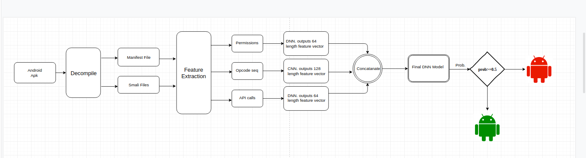
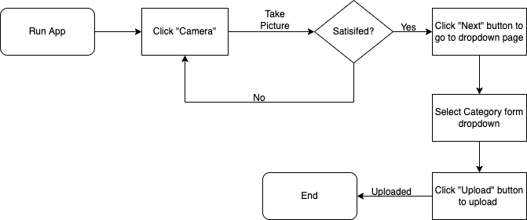
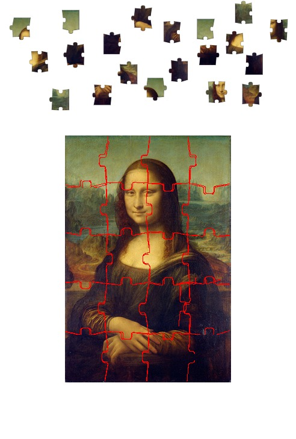
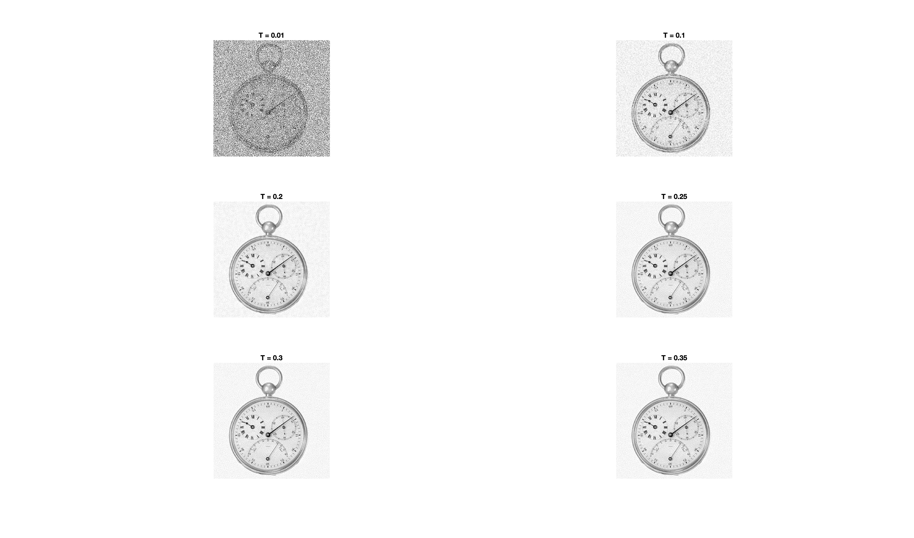
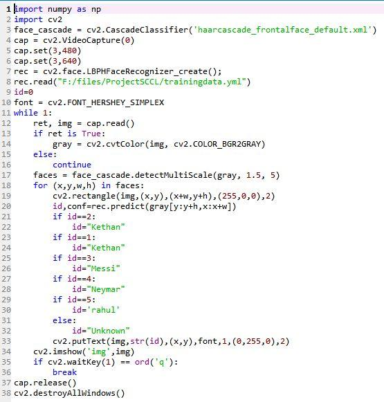
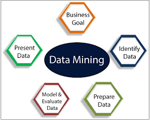

In this Project I built a Deep Learning Model that predicts malicious applications. The first step of implementation involves extracting three types of features by statically analyzing Android apps. Then, in the second step we pass the three types of features through three separate deep learning models to learn the features. Finally, the learnt features are passed through another deep learning model which performs the task of predicting whether the app under consideration is a malicious application or benign in nature. Final year Bachelors portfolio project.

Built an Android application that access Camera captures and categorises Images. Incrementally Working on this project as part of the course CSE 535 Mobile Computing at Arizona State University. Updates are expected till December 2023 :)

Solved Jigsaw puzzle using Image segmentation to break puzzle pieces and Block matching with the reference image.
Implemented Itti Koch Saliency Model algorithm in MATLAB that highlights parts of an Image salient to human eye. It involves image segmentation color smoothing and extracting Saliency map. Portfolio project for junior year at IIT(ISM) Dhanbad.

Implemented important Image Processing techniques like Image Filtering, Denoising, Edge Detection, Contrast Enhancement and Sharpness Enhancement from scratch as part of the course CSE 509 Digital Video Procesing at Arizona State University.

Worked on building a novel Face Recognition model for employees in the SCCL (The Singareni Collieries Company Ltd.) company that uses inputs from a Haar feature-based Cascade Classifier (HCC) a trained Object detector. It uses Linear Binary Pattern Histograms (LBPH) a visual descriptor used for classification in Open Computer Vision (OpenCV) to detect the face. The above approach is made using Dlib a c++ toolkit which contains imglab a web base tool to label images for the object.

My Personal implementation and review on some of the most important data mining techniques learned as part of CSE 572 Data Mining course at Arizona State University.